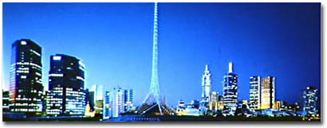
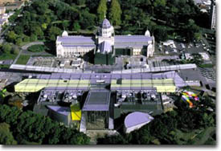
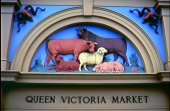
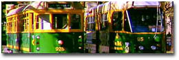

Melbourne is Australia's second largest city with a population of about 3.5 million people. It is probably best known for its trams, parks, bayside beaches and the Westgate Bridge!Melbourne is the capital city of Victoria, Australia. Covering an area of 7,280 sq kilometres, it is home to 3.2 million people from diverse backgrounds and interests. Melbourne is a great world city, noted for its diversity, vitality, and sophistication, all of which have made it one of the world's most liveable cities.
Things to do and see
1. Visit the Melbourne Museum!
You won't find many stuffed animals in glass boxes at the new $290 million
Melbourne Museum.
The philosophy of this museum is to create a living space - a centre for exploration,
education and fun. There are many sections, including:
- Bunjilaka (Aboriginal culture)
- Forest Gallery
- Mind and Body Gallery
- Evolution Gallery
- Australia Gallery
- Children's Museum

2. Go shopping at the Queen Victoria Markets!
3. Take a tram!
Tourist Services
1. Victorian Bus Operating Companies
Bus Companies.
2. General Tourism Information
Victorian Tourism Web Site.
3. Tourist Maps.
AUSLIG Tourist Maps.
4. Finding Holiday Accommodation in Victoria.
Beds on Line.
5. More General Information about visiting Melbourne.
CitySearch Melbourne: Visiting Melbourne.
6. Information On Public Transport in Melbourne
Public Transport FAQ.
| Monthly avg. Temp (C) | Monthly avg. Clear Days | Monthly avg. Rainfall (mm) |
|---|---|---|
| 19.5 | 3.2 | 46.5 |